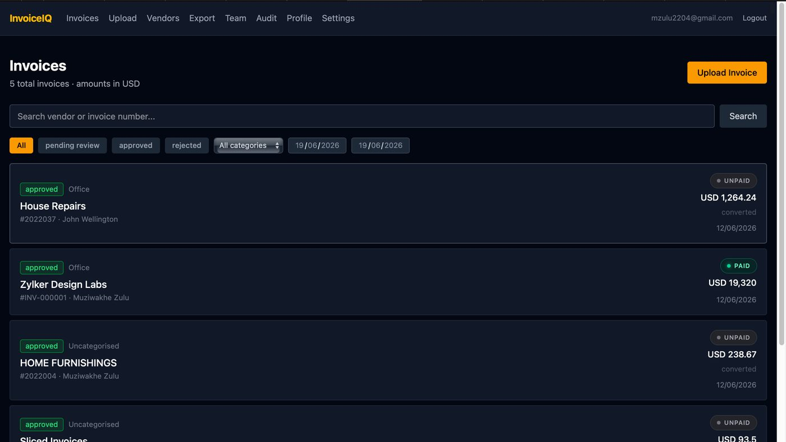

AI automation / Silvrah Global
InvoiceIQ
Turn invoice documents into structured data.
I built and shipped a multi-tenant SaaS application that extracts invoice data from PDFs and images using Claude and Gemini.
- FastAPI and React/Vite across the product stack.
- Celery and Redis for asynchronous processing; PostgreSQL Row Level Security for tenant isolation.
- Docker containers deployed to Azure through GitHub Actions.
Professional work · private repository
